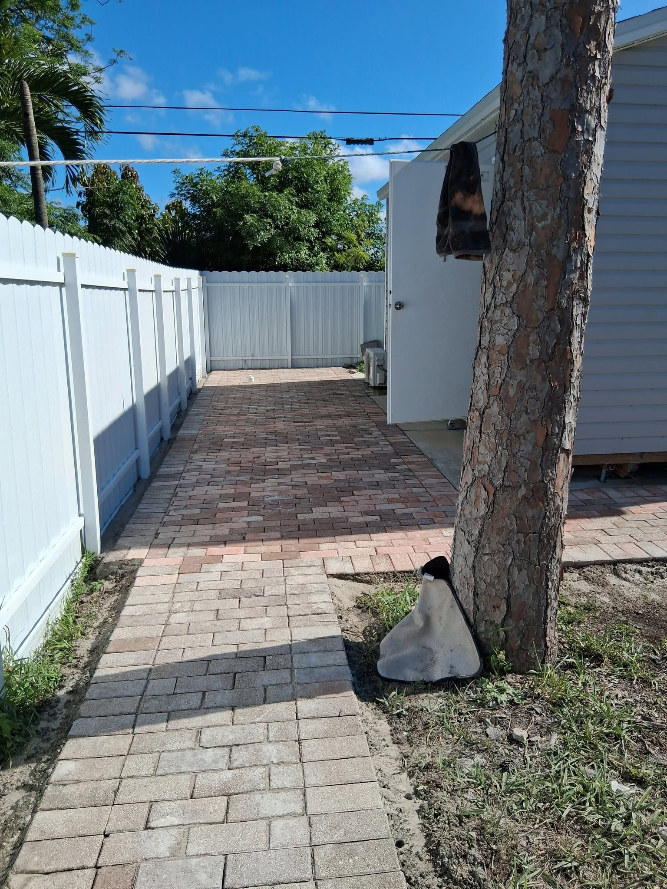

When homeowners see cracked, sunken, or stained pavers, the first reaction is usually to assume everything needs to come out and be replaced. In reality, the majority of paver problems can be fixed with targeted repair at a fraction of the replacement cost. Knowing when to repair vs. when to replace is the key to making a smart financial decision for your property.
Signs You Can Repair (Don't Replace)
These conditions typically call for repair, not full replacement:
- Isolated sunken or rocking pavers: Caused by localized base settlement or ant activity. The solution is to pull the affected pavers, re-compact the base, re-sand, and relay. Cost: $150–$600 for most areas.
- Cracked individual pavers: Single cracked units can be replaced one at a time if you have matching replacement pavers (or close matches). The structural integrity of the surrounding field is intact.
- Weed-infested joints: Joint sand depletion allows weed growth but doesn't indicate base failure. Solution: remove weeds, refill with polymeric sand, apply sealant. Cost: $0.50–$1.50 per sq ft.
- Efflorescence (white mineral stains): Cosmetic issue treatable with efflorescence cleaner and re-sealing.
- Oil or rust stains: Specialty paver cleaners handle most stains; in severe cases, individual pavers can be flipped (the bottom side is often unstained).
- Color fading: A quality color-enhancing sealer can restore significant color depth to faded pavers.
The Big Advantage of Pavers: Unlike poured concrete or asphalt, paver systems can be partially disassembled and repaired without destroying the surrounding surface. This repairability is one of the strongest arguments for choosing pavers in the first place.

Signs You Need Full Replacement
Full replacement becomes necessary when the problems are systemic rather than isolated:
- Widespread base failure: If more than 30–40% of the surface shows settling, heaving, or instability, the sub-base has failed. Repairing half a driveway is not economical — you'll keep returning to patch new problems as the base continues to fail.
- Drainage design failure: If the original installation has incorrect slope or inadequate drainage and water consistently pools on the surface or infiltrates toward your foundation, repair won't fix a design problem.
- Severely outdated pavers: If pavers are 25+ years old and significantly deteriorated throughout, the cost of comprehensive repair often approaches the cost of replacement — making a fresh start more logical.
- Major tree root damage: Tree roots that have lifted large sections of pavers require excavation to address the root issue before any surface can be re-installed.
- Irreparable color mismatch: If original pavers are discontinued or the color difference between new and old units is too great for a cohesive look, replacement of the full section makes more visual sense.
The Cost Comparison
Here's a realistic cost comparison for a 1,000 sq ft driveway:
- Targeted repair (25% of area): $1,500 – $4,000
- Full re-sanding and sealing: $1,200 – $2,500
- Comprehensive restoration (cleaning, re-leveling, re-sanding, sealing): $3,000 – $6,000
- Full replacement (new pavers): $12,000 – $20,000
The math is clear: repair whenever possible. The savings are substantial, and a professionally restored paver surface can look nearly new with proper cleaning and sealing.
Getting a Professional Assessment
Not sure which category your pavers fall into? We offer free assessments across Palm Beach County. Our team will inspect your surface, identify the root causes of any problems, and give you an honest recommendation — even if that means telling you repair is all you need. Call us at (561) 970-1917 to schedule a visit.